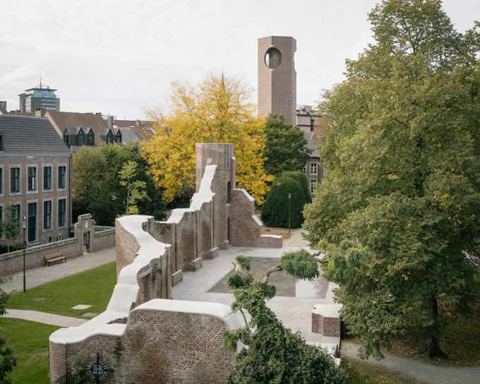

94建筑与设计
401世界建筑节 2026 公布第一天 23 个类别获奖：奥斯陆政府新区、焦特布尔游客中心、伦敦 Whiteley 等入选
四维 85×1.1 建筑与设计≈ 94
2026 世界建筑节于 11 月 18–20 日在佛罗里达州劳德代尔堡 Broward County Convention Center 举行。ArchDaily 于 11 月 19 日 12:30（上海时间；原文时间 04:30 UTC，对应佛罗里达 11 月 18 日晚）刊出第一天 Completed Buildings、Future Projects、Interiors 共 23 个类别的获奖名单，现场有逾 400 场陈述、逾 130 名国际评委。已完成建筑方面，奥斯陆 New Government Quarter（Nordic Office of Architecture 与 Haptic Architects）获 Civic and Community，哈瑟尔特 The Beguinage of Hasselt（Bovenbouw Architectuur 与 David Kohn Architects）获 Creative Re-use，焦特布尔 Mehrangarh Fort Visitor Centre（Studio Lotus）获 Culture，伦敦 The Whiteley（Foster + Partners）获 Retrofit；未来项目包括华沙 Port Polska（Foster + Partners）和上海 Yacht Club（Haptic Architects）。其余类别将继续角逐，11 月 20 日决出 World Building / Future Project / World Interior of the Year。
💡 点评这是现场评出来的第一批类别奖，不是年度总冠军，也还不是单栋新楼落成。当日本窗最硬的建筑节点，适合顺着名单去看那几座已经完成的房子，但不要写成已经决出世界年度建筑。
来源：ArchDaily